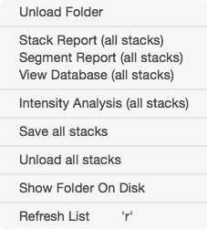

Stack Browser

The stack browser is the main starting point for using Map Manager. The stack browser provides an interface to load and browse folders of .tif stacks.
The list on the left is a list of loaded folders, each folder has a list of stacks. The list on the right shows the stacks in the selected folder. Select a folder on the left and the list on the right will show the individual stacks within that folder.
Double click a stack to open a stack window.
Loading stacks
Generic Import
The Load Tiff Folder button loads a folder of single-channel .tif stacks. Once loaded, the following should be filled in for each stack
- The stack scale can be automatically set for all imported stacks using the um/pixel x/y and z fields. This assumes all stacks in a folder have the same scale. The scale of individual stacks can then be set in the [stack][stack] window using keyboard shit+p.
- If the source .tif stack are multi-channel stacks, see bAlignBatch for a Fiji plugin to pre-process .tif stacks into ch1/ch2 file pairs.
ScanImage Import
The Load ScanImage Folder loads a folder of ScanImage .tif stacks.
Important. When importing ScanImage .tif files, the scale is not set by ScanImage. You need to calculate your x/y voxel size (in um per voxel) when you scan at 1x magnification with 1024 by 1024 pixels. You then set this value in '2p um/pixel (1024@1x)'. Map Manager will use this value to calculate each stacks x/y scale for arbitrary ScanImage zoom settings.
Drag and drop
The simplest way to load a single stack is to drag and drop a .tif file onto the Igor program icon. Stacks opened in this way will appear in a special folder (in the list on the left) called ‘DragAndDrop’.
Tip. The order of stacks can be sorted by selecting columns in the stack list. To sort by date, select 'Date' in the columns header. This ordering is critical when batch importing a list of stacks into a Map Manager map
.
Browsing loaded data
- Select a loaded folder on the left and the stacks in that folder will be shown on the right.
- Double click a stack in the list on the right to open a stack window.

Right-click a folder in the folder list
Right-click a folder to open a contextual menu.
-
Unload Folder. Unload the folder and all its stacks.
-
Stack Report (all stacks).
-
Segment Report (all stacks). Generate a segment report for all stacks.
-
View Database (all stacks). Generate a table with all analysis. This can be copied and pasted into other programs for analysis.
-
Intensity Analysis (all stacks). Analyze the intensity of all stacks in the folder. It is critical that each spine in the analysis is checked manually. Please see [Intensity Analysis][intensity].
-
Save (all stacks). Will save the annotations for all ‘dirty’ stacks in a folder. Dirty stacks are stacks that have been changed or modified since they were loaded. Dirty stacks are noted in the stack list with a red background in the ‘D’ column.
-
Show Folder On Disk. Open the hard-drive folder the folder was originally loaded from. This opens a Finder window on OSX and an Explorer window on Microsoft Windows.
-
Refresh List. To refresh the list of folders and the selected folder’s list of stacks. This is generally not needed.
Right-click a stack in the stack list
Right-click a stack to open a contextual menu. These menu items can also be triggered using the indicated keyboard shortcuts.
-
Display Stack. Open a [stack][stack] window. Same as double-click.
-
Unload Stack. Unload the raw data for a stack. Important, this unloads the raw data to conserve memory, it DOES NOT unload the stack annotations.
-
Stack Report.
-
Segment Report. Generate a segment report for all segments in a stack. See reports.
-
View Database. Open a text table with all annotations in the stack. This can be copied and pasted into other programs for analysis.
-
Experimental - Segment Length Plot. Make both 2D and 3D plots of segment length as a function of the Z-Smoothing parameter.
What is next?
Once a folder of .tif stacks is loaded
- Start scoring single timepoint stacks following annotating a stack
- Put the stacks into a time-series map following making a map